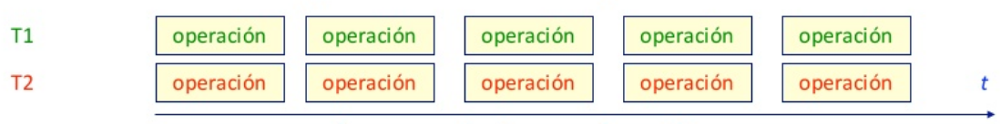

Programación Concurrente
Created by rmarku
¿Cómo Funciona?
En un sistema con varios procesadores se puede ejecutar cada tarea en un procesador (ejecución simultanea,paralelismo físico)
¿Cómo Funciona?
En un sistema monoprocesador se intercalan las operaciones de las tareas (multiplexado en el tiempo, paralelismo lógico)

Concurrencia vs. Paralelismo
- La concurrencia es mas general que el paralelismo
- Las soluciones en P. Concurrente son validas en paralelismo
- Paralelismo es ejecución simultanea de procesos concurrentes
Aplicaciones
- Interfaces de usuario reactivas
- atención a sucesos asíncronos
- gestión de ventanas
- Servidores
- atención a múltiples clientes
- gestión de protocolos de comunicación
- Mejoras de rendimiento
- Cálculos complejos
Problema ejemplo
Hacer un programa que:- muestre la hora cada 1s
- emita un sonido cuando aprietan la tecla enter
- la tecla se puede pulsar en cualquier momento
- conflicto de un suceso asíncrono con uno síncrono
Solución

Solución
/* Hora */
while(1){
sleep(1000);
hora = Time.getTime();
cout << "La hora es " << hora;
}
/* Sonido */
while(1){
waitKey();
beep(440);
}
Propiedades de los programas concurrentes
- Corrección
- Seguridad
- Vivacidad
- Equidad
Real Time o reactive computing
- Depende de lo que se espera del sistema
- Que tan rápido responde a los eventos
Tiempo Real
Criterios de tiempo real
- Hard
- Firm
- Soft